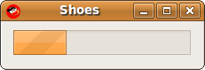

The Shoes Manual
Progress
Progress bars show you how far along you are in an activity. Usually, a progress bar represents a percentage (from 0% to 100%.) Shoes thinks of progress in terms of the decimal numbers 0.0 to 1.0. 
A simple progress bar is 200 pixels wide, but you can use the :width style (as with all Shoes elements) to lengthen it.
Shoes.app do
stack :margin => 0.1 do
title "Progress example"
@p = progress :width => 1.0
animate do |i|
@p.fraction = (i % 100) / 100.0
end
end
end
Take a look at the Common methods page for a list of methods found an all elements, including progress bars.
fraction() » a decimal number
Returns a decimal number from 0.0 to 1.0, indicating how far along the progress bar is.
Sets the progress to a decimal number between 0.0 and 1.0.
Next: Radio